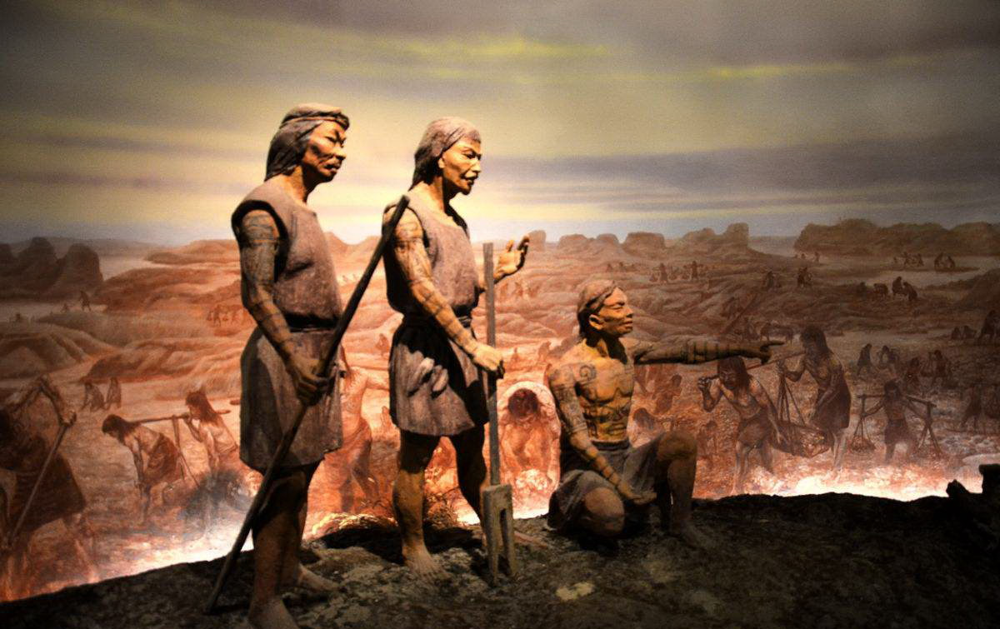

吴越文化

梁祝传说
故事讲述的是上虞祝家庄才女祝英台，女扮男装赴杭求学，途中邂逅同时到杭州求学的会稽书生梁山伯，于是双双结伴到杭州游学，期间同窗三载，形影不离，结下深厚情义。祝英台学成先归，二年后梁山伯到虞寻访祝英台时，真相大白，方知祝英台是女儿身，遂回家告知父母，意欲娶其为妻，不料此时祝英台已由父母之命许配马家，梁山伯知后追悔莫及。三年后梁山伯出任鄞县县令，终因多年相思成疾，一病不起，死后葬鄞城西清道山下。梁死后第二年祝英台出嫁途中，路经梁墓，风浪大作，闻此处就是梁山伯葬地之后，不禁悲从中来，上山祭奠，祝英台痛哭亡灵，情义感动天地，只见梁山伯墓突然地裂开一道口子，祝英台纵身跃入其中，同穴而死，过后二人魂魄化作彩蝶翩翩起舞。